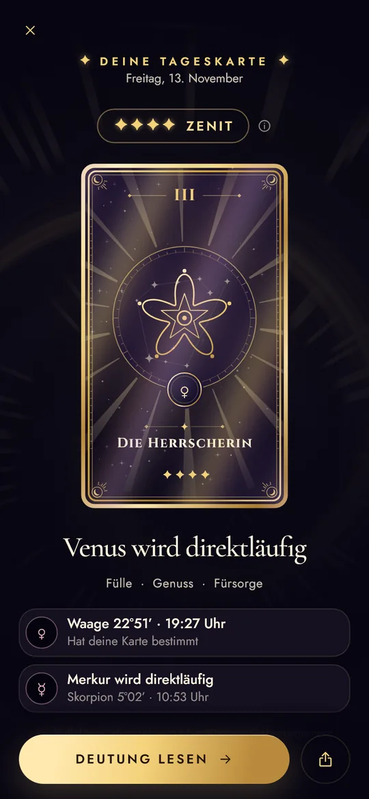

zodiacally.com, Beispiel-HoroskopApp, Vorschau aus dem Testlauf

zodiacally.comLive-Seite, 12.11.2026

zodiacally.comBeispiel-Reading, erfundenes Profil
Android-AppTestlauf
1 / 4
Zodiacally
Astrologie-Plattform als Website und Android-App, mit eigener Rechenengine und KI-Texten
Website live, App bei Google Play · seit 07/2025, nach einer Pause wieder seit 04/2026
- Eigene Rechenengine für Planetenpositionen: bei Sonne und Mond weniger als ein Hunderttausendstel Grad Abweichung von der Rechenbibliothek Swiss Ephemeris
- Messbericht und Code der Rechenengine sind öffentlich einsehbar
- In der App zieht man jeden Tag eine Karte: Welche es ist, folgt aus dem berechneten Himmel, ohne Zufall
Fallstudie lesen Messseite auf zodiacally.com Rechenengine auf GitHub